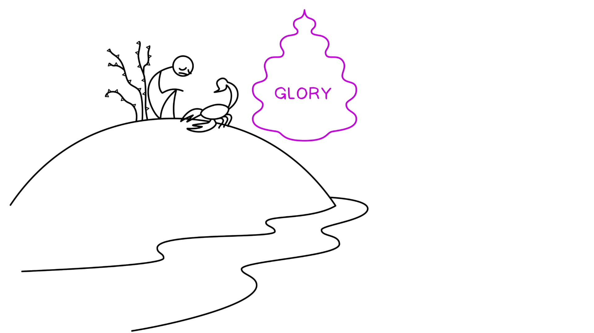

Muitos personagens bíblicos tiveram encontros dinâmicos com Deus na oração. Ezequiel está no exílio fora do Éden, e ainda assim ele tem um encontro com o interior do Éden — a glória de Yahweh. Personagens bíblicos enfrentam testes sobre comer ou abster-se de comida, lembrando o teste no jardim do Éden. Ezequiel passa no seu teste e é enviado como profeta ao povo. Tradução e Design Literário de Ezequiel 1:28b-3:9 1:28b E ouvi uma voz falando, a 2:1 e ele me disse: “ Filho de um humano , levanta-te em pé b e eu falarei contigo.” c 2 E o Espírito/sopro entrou em mim, d quando ele me falou, c' e ela me pôs de pé b' e eu o ouvi falando comigo. a' 3 E ele me disse: “ Filho de um humano , eu te envio aos filhos de Israel, a nações rebeldes que se rebelaram contra mim; eles e seus pais me traíram até este dia. 4 E os filhos que são duros de rosto e duros de coração, eu te envio a eles. E tu dirás a eles: ‘Assim diz o Senhor Yahweh!’ 5 E quanto a eles, se ouvirem ou se recusarem — Parte 1Many biblical figures had dynamic encounters with God in prayer. Ezekiel is in exile outside of Eden, yet he has an encounter with the inside of Eden—the glory of Yahweh. Biblical characters face tests about eating or abstaining from food, recalling the test in the garden of Eden. Ezekiel passes his test and is sent as a prophet to the people. Translation and Literary Design of Ezekiel 1:28b-3:9 1:28b And I heard a voice speaking, a 2:1 and he said to me: “ Son of a human , stand on your feet b and I will speak with you.” c 2 And the Spirit/breath came into me, d when he spoke to me, c' and she stood me on my feet b' and I heard him speaking to me. a' 3 And he said to me: “ Son of a human , I am sending you to the sons of Israel, to rebellious nations who have rebelled against me; they and their fathers have betrayed me until this very day. 4 And the sons who are hard of face and hard of heart, I am sending you to them. And you shall say to them, ‘Thus says the Lord Yahweh!’ 5 And as for them, whether they hear or whether they refuse — Part 1
então saberão que um profeta esteve entre eles. 6 E quanto a ti, filho de um humano , não temas deles, a nem temas as suas palavras. Embora sejam espinhos e espinhos para ti, b e tu estás sentado com escorpiões, não temas as suas palavras, a' e não te perturbes diante deles, porque são uma casa rebelde. b' 7 E falarás as minhas palavras a eles, quer ouçam quer recusem , porque são rebeldes. A 8 Agora tu, filho de um humano, ouve o que eu te digo ; não seja rebelde como aquela casa rebelde. Abre a tua boca e come o que eu te dou.” B 9 Então eu olhei, e eis: uma mão foi estendida para mim; e eis, um rolo estava nela. 10 E ele o estendeu diante de mim, e estava escrito na frente e atrás, e nele estavam escritos lamentações, luto e dor. 3:1 E ele me disse: “Filho de um humano, come o que encontrares; come este rolo, e vai, fala à casa de Israel.” A' 2 E eu abri a minha boca, e ele me fez comer este rolo. 3 E ele me disse: “Filho de um humano, faz o teu estômago comer, e enche as tuas entranhas com este rolo que eu te dou.” Parte 2then they will know that a prophet has been in their midst. 6 And as for you son of a human , do not be afraid of them, a and do not be afraid of their words. Although they are thorns and barbs for you, b and you are sitting with scorpions, do not be afraid of their words, a' and do not be dismayed before them, because they are a rebellious house. b' 7 And you shall speak my words to them, whether they listen or whether they refuse , because they are rebellious. A 8 Now you, son of a human, listen to what I am speaking to you ; do not be rebellious like that rebellious house. Open your mouth and eat what I am giving you.” B 9 Then I looked, and look: a hand was extended to me; and look, a scroll was in it. 10 And he spread it out before me, and it was written on the front and back, and written on it were lamentations, mourning and woe. 3:1 And he said to me, “Son of a human, eat what you find; eat this scroll, and go, speak to the house of Israel.” A' 2 And I opened my mouth, and he made me eat this scroll. 3 And he said to me, “Son of a human, make your stomach eat, and fill your innards with this scroll which I am giving you.” Part 2
Diagrama da página 2. Ilustração criada por Tim Mackie para BibleProject Classroom: Ezequiel (2021). Diagram from page 2. Illustration by Tim Mackie for BibleProject Classroom: Ezekiel (2021).
Ezequiel 1:28b-3:9. Design Literário por Tim Mackie para BibleProject Classroom: Ezequiel (2021) Ezequiel Chamado a Falar ao Israel Rebelde ao Comer o Rolo Em Ezequiel 2:2 (e Ezeq. 3:12-14), o ruakh (Espírito) que animava as criaturas (Ezeq. 1:12, 20, 21) entra em Ezequiel e o comissiona. Assim como os seres viventes eram movidos e conduzidos pelo ruakh, assim também agora Ezequiel será conduzido e movido. É uma imagem poderosa do profeta sendo arrebatado pela vontade e pela palavra divina, gostando disso ou não. Em Ezequiel 2:3, Ezequiel é retratado como um novo Moisés enviado a uma audiência rebelde que resistirá à sua mensagem. Êxodo 3:9-10 NASB E eu o comi, e era doce como mel na minha boca. A 4 E ele me disse: “Filho de um humano, vai à casa de Israel e fala as minhas palavras a eles. B 5 Pois não és enviado a um povo de fala profunda ou língua pesada, mas à casa de Israel és enviado; 6 nem a muitos povos de fala profunda ou língua pesada, cujas palavras não podes compreender.Ezekiel 1:28b-3:9. Literary Design by Tim Mackie for BibleProject Classroom: Ezekiel (2021) Ezekiel Called To Speak to Rebellious Israel by Eating the Scroll In Ezekiel 2:2 (and Ezek. 3:12-14), the ruakh (Spirit) that animated the creatures (Ezek. 1:12, 20, 21) comes into Ezekiel and commissions him. Just as the living-beings were moved and driven by the ruakh, so now Ezekiel will be driven and moved as well. It’s a powerful image of the prophet being seized by the divine will and word, whether or not he likes it. In Ezekiel 2:3, Ezekiel is depicted as a new Moses sent to a rebellious audience who will resist his message. Exodus 3:9-10 NASB And I ate it, and it was sweet as honey in my mouth. A 4 And he said to me, “Son of a human, go to the house of Israel and speak with My words to them. B 5 For you are not being sent to a people of deep of speech or heavy of tongue, but to the house of Israel you are being sent; 6 not to many peoples of deep of speech or heavy of tongue, whose words you cannot understand.
eles te ouviriam. A' 7 Mas a casa de Israel não estará disposta a te ouvir, pois não estão dispostos a me ouvir, porque toda a casa de Israel é forte de testa e dura de coração. 8 Vê, eu fiz o teu rosto tão forte como os seus rostos, e a tua testa tão dura como as suas testas. 9 Como diamante, mais duro do que o sílex, eu fiz a tua testa; não temas deles, e não te perturbes diante deles, pois são uma casa rebelde.” Parte 3they would listen to you. A' 7 But the house of Israel will not be willing to listen to you, since they are not willing to listen to me, because the whole house of Israel is strong of forehead and hard of heart. 8 Look, I have made your face as strong as their faces, and your forehead as hard as their foreheads. 9 Like diamond harder than flint I have made your forehead; do not be afraid of them, and do not be dismayed before them, for they are a rebellious house.” Part 3
9 Agora, eis, o clamor dos filhos de Israel chegou a mim; além disso, vi a opressão com que os egípcios os oprimem. 10 Vem, pois, e eu te enviarei ao Faraó, para que tires o meu povo, os filhos de Israel, do Egito. Ezequiel 2:3-4 NASB 3 Então ele me disse: “Filho do homem, eu te envio aos filhos de Israel, a um povo rebelde que se rebelou contra mim; eles e seus pais transgrediram contra mim até este dia. 4 “Eu te envio aos que são filhos obstinados e obstinados, e tu dirás a eles: ‘Assim diz o Senhor Deus.’ O Teste da Obediência de Ezequiel Ezequiel comendo o rolo (Ezeq. 2:8-3:3; ver também Jr 15:16) é comumente entendido como Ezequiel simbolicamente “ingerindo” a sua mensagem profética para que possa ir e anunciá-la. Mas esta interpretação confunde esta cena com o que vem a seguir, onde ele é ordenado a tomar a palavra divina “para dentro do teu coração ... e dos teus ouvidos” ( Ezeq. 3:10). Esta cena, na qual Ezequiel internaliza o rolo de luto, é o teste de Ezequiel (para esta interpretação, ver Margaret Odell, Ezekiel, p. 44). Ezequiel 2:8 Tradução do Instrutor Mas tu, filho de um humano, ouve o que eu te digo; não seja rebelde, como a casa rebelde; abre a tua boca e come o que eu te dou. A provação de Ezequiel é claramente apresentada como um teste que separará dos seus contemporâneos rebeldes. Comer o alimento (e estranho) provido por Deus é submeter-se à vontade divina e assim separar-se do meio do povo. Este teste encontra um paralelo único com a provação da mulher adúltera em Números 5:11-31. Números 5:23-24 NASB 23 ‘O sacerdote escreverá então estas maldições num rolo, e as lavrará na água de amargura. 24 ‘E então ele fará a mulher beber a água de amargura que traz a maldição, para que a água que traz a maldição entre nela e cause amargura. Nesta estranha provação simbólica, a culpa ou a inocência da mulher é estabelecida pelo ato de comer as palavras de um rolo de maldições da aliança. Assim aqui, Ezequiel é convidado a comer o rolo do julgamento divino. Mas a sua obediência traz um resultado surpreendente. O rolo de lamentações traz doçura em vez de amargura. Esta imagem é repetida no Salmo 19:10 e 119:103, e nos faz pensar que isto reflete a bondade do encontro pessoal de Ezequiel com Yahweh (note a inversão desta imagem em Apoc. 10:10). Mas esta imagem doce está fora de lugar aqui, pois a experiência de Ezequiel está cheia de medo, terror e tristeza. Israel é retratado como resistente, rebelde e incapaz de ouvir a sua mensagem. O exílio não mudou os seus corações; a geração exilada está perpetuando a mesma rebelião da aliança de seus pais. A expressão “duros de rosto e duros de coração” em Ezequiel 2:4 e 3:7 ecoa “de pescoço duro” de Êxodo 32:9.9 Now, behold, the cry of the sons of Israel has come to me; furthermore, I have seen the oppression with which the Egyptians are oppressing them. 10 Therefore, come now, and I will send you to Pharaoh, so that you may bring my people, the sons of Israel, out of Egypt. Ezekiel 2:3-4 NASB 3 Then he said to me, “Son of man, I am sending you to the sons of Israel, to a rebellious people who have rebelled against me; they and their fathers have transgressed against me to this very day. 4 “I am sending you to them who are stubborn and obstinate children, and you shall say to them, ‘Thus says the Lord God.’ The Test of Ezekiel’s Obedience Ezekiel eating the scroll (Ezek. 2:8-3:3; see also Jer. 15:16) is commonly understood as Ezekiel symbolically “ingesting” his prophetic message so that he can go and announce it. But this interpretation confuses this scene with what follows, where he's commanded to take the divine word “into your heart ... and your ears” ( Ezek. 3:10). This scene, in which Ezekiel internalizes the scroll of grieving, is Ezekiel’s test (for this interpretation, see Margaret Odell, Ezekiel, p. 44). Ezekiel 2:8 Instructor's Translation But you, son of a human, hear what I am speaking to you; do not be rebellious, like the rebellious house; open your mouth and eat what I am giving to you. Ezekiel’s ordeal is clearly presented as a test that will set him apart from his rebellious contemporaries. To eat the divinely provided (and strange) food is to submit to the divine will and so separate himself from among the people. This test finds a unique parallel with the testing ordeal of the adulterous wife in Numbers 5:11-31. Numbers 5:23-24 NASB 23 ‘The priest shall then write these curses on a scroll, and he shall wash them off into the water of bitterness. 24 ‘Then he shall make the woman drink the water of bitterness that brings a curse, so that the water which brings a curse will go into her and cause bitterness. In this strange symbolic ordeal, the woman’s guilt or innocence is established by her eating the words of a scroll of covenant curses. So here, Ezekiel is invited to eat the scroll of divine judgment. But his obedience brings about a surprising result. The lament scroll brings sweetness instead of bitterness. This image is repeated in Psalm 19:10 and 119:103, and makes us think this reflects the goodness of Ezekiel’s personal encounter with Yahweh (note the reversal of this image in Rev. 10:10). But this sweet imagery is out of place here, as Ezekiel’s experience is filled with fear, terror, and sorrow. Israel is depicted as resistant, rebellious, and unable to listen to his message. The exile did not change their hearts; the exiled generation is perpetuating the same covenant rebellion of their fathers. The phrase “stiff of face and hard of heart” in Ezekiel 2:4 and 3:7 echoes “stiff-necked” from Exodus 32:9.
Tradução e Design Literário de Ezequiel 3:10-15 Ezequiel 3:10-15. Tradução e Design Literário por Tim Mackie para BibleProject Classroom: Ezequiel (2021). Ezequiel Depositado de Volta em Casa — Realmente Empolgado Depois que o comissionamento de Ezequiel termina, ele ouve um último mandamento para voltar à sua comunidade de exilados (que ecoa o chamado inicial em Ezeq. 2:1-8). Enquanto é "erguido pelo ruakh, ele ouve um som/voz" (que ele também ouviu antes em Ezeq. 1:24-25), que descreve de três maneiras. 1. Um tremor da terra 2. Um anúncio audível de bênção e louvor 3. O som do carro divino em movimento O segundo elemento acima, o anúncio de bênção sobre a presença divina, é fascinante. Não há contexto preparatório para este anúncio, nenhuma menção de quem o diz a quem. É, no entanto, semelhante a 10 E ele me disse: “Filho de um humano, todas as minhas palavras faladas que eu te direi, toma para dentro do teu coração e ouve com os teus ouvidos. 11 E anda (הלך), vai (בוא) aos exilados, aos filhos do teu povo, e fala-lhes e diz-lhes: ‘Isto é o que Yahweh Elohim diz …’ quer ouçam quer não.” 12 E o ruakh me ergueu, a e ouvi atrás de mim o som de um grande tremor, b “Bendito seja a glória de Yahweh desde o seu lugar.” c 13 E o som das asas dos seres viventes se tocando umas às outras, e o som das rodas ao lado delas, e o som de um grande tremor. b' 14a E o ruakh me ergueu e me levou embora; a' 14b e eu andei (הלך), amargo, na ira quente do meu ruakh, e a mão de Yahweh estava forte sobre mim. 15 E eu fui (בוא) aos exilados em Tel-Aviv, os que moravam junto ao rio Quebar, e eu me sentei ali sete dias, exibindo choque, no meio deles.Translation and Literary Design of Ezekiel 3:10-15 Ezekiel 3:10-15. Translation and Literary Design by Tim Mackie for BibleProject Classroom: Ezekiel (2021). Ezekiel Deposited Back Home—Really Worked Up After Ezekiel’s commissioning is over, he hears one last command to go back to his community of exiles (that echoes the opening call in Ezek. 2:1-8). As he is "lifted up by the ruakh, he hears a sound/voice” (which he also heard back in Ezek. 1:24-25), that he describes in three ways. 1. A quaking of the land 2. An audible announcement of blessing and praise 3. The sound of the divine chariot moving The second element above, the announcement of blessing on the divine presence, is fascinating. There is no preparatory context for this announcement, no mention of who says it to whom. It is, however, similar to a 10 And he said to me, “Son of a human, all my spoken-words which I will speak to you, take into your heart and listen with your ears. 11 And walk (הלך), go (בוא) to the exiles, to the sons of your people, and speak to them and say to them, ‘This is what Yahweh Elohim says …’ whether they listen or not.” 12 And the ruakh lifted me up, a and I heard the sound of a great quaking behind me, b “Blessed be the glory of Yahweh from his place.” c 13 And the sound of the wings of the living beings touching one another, and the sound of the wheels beside them, and the sound of a great quaking. b' 14a And the ruakh lifted me up and took me away; a' 14b and I walked (הלך), bitter, in the hot-anger of my ruakh, and the hand of Yahweh was strong on me. 15 And I went (בוא) to the exiles at Tel-Aviv, those lived beside the river Chebar, and I sat there seven days, displaying shock, in their midst.
doxologia encontrada no Salmo 135:21.doxology found in Psalm 135:21.
que habita em Jerusalém. Louvado seja o SENHOR! *Palavras-chave adaptadas pelo Instrutor Ezequiel 3:12 NASB* Bendito seja a glória de Yahweh desde o seu lugar )(ממקומו. *Palavras-chave adaptadas pelo Instrutor A ideia de que Yahweh recebe louvor “de Sião” implica um grupo não mencionado daqueles que oferecem o louvor (isto é, dos habitantes de Sião). A questão, então, é se “desde o seu lugar” em Ezequiel 3:12 significa a mesma coisa. A expressão “desde o seu lugar” pode significar: (a) que a gloriosa presença de Yahweh deve receber bênção e louvor que vem do seu lugar (isto é, do templo, como em Sl 135:21), ou (b) que a glória de Yahweh é de fato ainda bendita, ainda que deslocada de seu lar próprio no templo, “longe do seu lugar.” A opção (b) faz muito mais sentido como conclusão culminante da visão de Ezequiel. “... a glória de Deus é bendita onde quer que esteja, mesmo que não esteja no templo. O templo já não existe [como lugar de adoração própria], mas a glória de Deus pode ainda assim ser vista e louvada. ... Deus pode ser louvado aqui e agora entre os exilados da mesma maneira que uma vez era louvado de Sião ... O lugar antes fixo para a presença de Deus e o louvor apropriado no templo deu lugar ao aberto no céu.” Schafer, Peter (2009). The Origins of Jewish Mysticism. Princeton University Press. 49. Em contraste com as abordagens acima a Ezequiel 3:12, muitos estudiosos notam a estranheza da doxologia súbita no contexto, porque o ruído é explicitamente identificado como a comoção causada pelas asas e movimentos do carro divino (como em Ezeq. 1:24-25). E assim os estudiosos seguem a sugestão de Ferdinand Hitzig (Der Prophet Ezechiel, 1847) e Samuel David Luzzatto em emendar o texto da seguinte maneira: Em vez de baruk ),(ברוך “bendito seja”, eles propuseram que o texto originalmente dizia barum ),(ברום “quando subiu”. E embora as duas palavras não se pareçam inteiramente na fonte hebraica quadrada medieval, elas teriam parecido quase idênticas em paleo-hebraico, na qual Ezequiel teria escrito. Abaixo está uma comparação em script hebraico tirada das cartas de Lachish judeitas do século 7.who dwells in Jerusalem. Praise the LORD! *Key Words Adapted by Teacher Ezekiel 3:12 NASB* Blessed be the glory of Yahweh from its place )(ממקומו. *Key Words Adapted by Teacher The idea that Yahweh receives praise “from Zion” implies an unmentioned group of those offering up the praise (i.e., from the inhabitants of Zion). The question, then, is whether “from its place” in Ezekiel 3:12 means the same thing. The phrase “from its place” could mean: (a) that the glorious presence of Yahweh is to receive blessing and praise that comes from its place (i.e., the temple, as in Ps. 135:21), or (b) that the glory of Yahweh is in fact still blessed, even though it is displaced from its proper home in the temple, “away from its place.” Option (b) makes much more sense as a climactic conclusion to Ezekiel’s vision. “... God’s glory is blessed wherever it is, even if it is not in the temple. The temple no longer exists [as a place of proper worship], but God’s glory can nevertheless be seen and praised. ... God can be praised here and now among the exiles in the same manner that he was once praised from Zion ... The once fixed place for God’s presence and appropriate praise in the temple has given way to the open in heaven.” Schafer, Peter (2009). The Origins of Jewish Mysticism. Princeton University Press. 49. In contrast to the above approaches to Ezekiel 3:12, many scholars note the oddity of the sudden doxology in context, because the noise is explicitly identified as the commotion caused by the wings and movements of the divine chariot (as in Ezek. 1:24-25). And so scholars follow the suggestion of Ferdinand Hitzig (Der Prophet Ezechiel, 1847) and Samuel David Luzzatto in emending the text in the following way: Instead of baruk ),(ברוך “blessed be,” they proposed the text originally read barum ),(ברום “when it rose.” And while the two words don’t look entirely similar in medieval square Hebrew font, they would have looked nearly identical in paleo Hebrew, in which Ezekiel would have written. Below is a comparison in Hebrew script from the 7th century Judean Lachish letters.
Quando Subiu em Paleo-Hebraico “Bendito seja a glória de Yahweh desde o seu lugar” “Quando a glória de Yahweh subiu desde o seu lugar” “bendito seja” baruk “quando subiu” barum Baruk vs. Barum. Criado por Tim Mackie para BibleProject Classroom: Ezequiel (2021).When It Rose Up in Paleo Hebrew “Blessed be the glory of Yahweh from its place” “When the glory of Yahweh rose up from its place” “blessed be” baruk “when it rose up” barum Baruk vs. Barum. Created by Tim Mackie for BibleProject Classroom: Ezekiel (2021).
Baruk vs. Barum. Criado por Tim Mackie para BibleProject Classroom: Ezequiel (2021). Ezequiel fica atordoado por sete dias (Ezeq. 3:14-15); exatamente o número de dias que a sua ordenação ao sacerdócio teria durado (Êxod. 29:35). Em vez disso, ele é ordenado para um tipo muito diferente de comissão que o perturba profundamente. Temas-Chave em Ezequiel 1-3 A glória de Yahweh aparece fora do templo de Jerusalém, perto de um campo de escravos na Babilônia (!). Duas implicações: (1) Yahweh efetivamente abandonou Jerusalém e o seu templo; (2) a gloriosa presença de Yahweh pode estar com o seu povo em qualquer lugar porque, como a visão torna simbolicamente claro, o cosmos inteiro é o templo de Yahweh. “O Deus que aparece a Ezequiel é ... o Deus do cosmos, que não está confinado aos limites do templo. Com certeza, o templo de Jerusalém ainda não foi destruído quando Ezequiel vê a sua visão de Deus como senhor de todo o cosmos (em 592 A.C.), mas ele será destruído em breve (em 586 A.C.), e é uma das principais tarefas do profeta recém-nomeado anunciar exatamente isso. A visão antecipa o que acontecerá em breve, e a sua mensagem não é apenas que Deus se revela fora da terra de Israel, mas que Deus se revela fora do templo. Deus não precisa do templo ... assim como não precisou do templo no passado distante ... O cosmos inteiro é o seu templo.” Schafer, Peter (2009). The Origins of Jewish Mysticism. Princeton University Press. 50. Yahweh foi para o exílio com o seu povo, e escolheu se revelar a um remanescente ali, do qual “ressuscitará” (como em Ezeq. 37) um povo de aliança renovado. Yahweh declara que é entre os exilados arrependidos que ele se tornou “um santuário temporário/pequeno” (ver Ezeq. 11:16), e que destes exilados ele restaurará um novo Israel que viverá as promessas de renovação exploradas em Ezequiel 34-48 (ver Ezeq. 11:17-20). “O próprio Deus se tornou um ‘pequeno santuário’ para o povo de Israel durante o seu exílio, quando o templo é destruído. Deus não está mais atrelado à terra de Israel ou ao seu templo. Onde quer que ele esteja, o templo está com ele. Com certeza, o templo será reconstruído, e Deus então voltará a ele. Mas por enquanto ... que melhor substituto para o templo poderia haver do que o próprio Deus.” Schafer, Peter (2009). The Origins of Jewish Mysticism. Princeton University Press. 51. Os contemporâneos de Ezequiel resistem à sua mensagem e a acham indesejável, e o problema são os seus corações duros (Ezeq. 2:3-4, 3:7). Esta primeira descrição da fonte da rebelião de Israel é chave para a mensagem do livro.Baruk vs. Barum. Created by Tim Mackie for BibleProject Classroom: Ezekiel (2021). Ezekiel sits stunned for seven days (Ezek. 3:14-15); exactly the number of days his ordination into the priesthood would have lasted (Exod. 29:35). Instead he is ordained for a very different kind of commission that disturbs him deeply. Key Themes in Ezekiel 1-3 Yahweh’s glory appears outside the Jerusalem temple, near a slave camp in Babylon (!). Two implications: (1) Yahweh has effectively abandoned Jerusalem and its temple; (2) Yahweh’s glorious presence can be with his people anywhere because, as the vision makes symbolically clear, the entire cosmos is the temple of Yahweh. “The God who appears to Ezekiel is ... the God of the cosmos, who is not confined to the boundaries of the temple. To be sure, the Jerusalem temple is not yet destroyed when Ezekiel sees his vision of God as ruler of the entire cosmos (in 592 B.C.E.), but it will be destroyed soon (in 586 B.C.E.), and it is one of the major tasks of the newly appointed prophet to announce this very thing. The vision anticipates what will happen soon, and its message is not only that God reveals himself outside the land of Israel, but that God reveals himself outside the temple. God does not need the temple ... just as he did not need the temple in the distant past ... The entire cosmos is his temple.” Schafer, Peter (2009). The Origins of Jewish Mysticism. Princeton University Press. 50. Yahweh has gone into exile with his people, and he has chosen to reveal himself to a remnant there, from which he will “resurrect” (as in Ezek. 37) a renewed covenant people. Yahweh declares that it is among the repentant exiles that he has become “a temporary/little sanctuary” (see Ezek. 11:16), and that from these exiles he will restore a new Israel that will experience the promises of renewal explored in Ezekiel 34-48 (see Ezek. 11:17-20). “God himself has become a ‘small sanctuary’ to the people of Israel during their exile, when the temple is destroyed. God is no longer bound to the land of Israel or to its temple. Wherever he is, the temple is with him. To be sure, the temple will be rebuilt, and God will then return to it. But for the time being ... what better substitute could there be for the temple than God himself.” Schafer, Peter (2009). The Origins of Jewish Mysticism. Princeton University Press. 51. Ezekiel’s contemporaries resist his message and find it unwelcome, and the problem is their hard hearts (Ezek. 2:3-4, 3:7). This first description of the source of Israel’s rebellion is key to the message of the book.
Ao enquadrar a resistência dos exilados à mensagem de Ezequiel desta maneira, a presente geração de Israel é retratada por analogia à geração do deserto e a Faraó, o rei do Egito na Torá. Ambos os personagens são descritos como tendo corações duros e resistentes à mensagem de Yahweh.By framing the exiles’ resistance to Ezekiel’s message in this way, the present generation of Israel is depicted on analogy to the wilderness generation and to Pharaoh, the king of Egypt in the Torah. Both characters are described as having hard and resistant hearts to the message of Yahweh.
13 Mas o coração de Faraó era duro ( לב+ חזק) , e ele não os ouviu, como o SENHOR tinha dito. 14 Então o SENHOR disse a Moisés: “O coração de Faraó é duro ( לב+ כבד) ; ele se recusa a deixar o povo ir. Ezequiel 2:4 Eu te envio aos que são filhos duros de rosto (קשי פנים) e duros de coração (הזקי לב) , e tu dirás a eles: ‘Assim diz o Senhor Deus.’ Ezequiel 3:7 pois a casa de Israel não estará disposta a te ouvir, pois não estão dispostos a me ouvir. Com certeza, toda a casa de Israel é dura de testa (חזקי מצח) e obstinada de coração (לב קשי). Êxodo 32:8-9 8 “Eles se desviaram rapidamente do caminho que eu lhes mandei. Fizeram para si um bezerro de ouro fundido, e o adoraram, e ofereceram sacrifices a ele e disseram: ‘Este é o teu deus, ó Israel, que te fez subir da terra do Egito!’” 9 O SENHOR disse a Moisés: “Eu vi este povo, e eis, é um povo de pescoço duro (קשה ערף) . O Coração Duro de Faraó. Criado por Tim Mackie para BibleProject Classroom: Ezequiel (2021). Repare como em 2:4 as descrições tanto de Faraó quanto dos israelitas no deserto são usadas para descrever os exilados, mas então em 3:7-8 as frases são misturadas e combinadas, de modo que os exilados são de fato uma combinação de Faraó e da geração do bezerro de ouro. Este retrato dos exilados como semelhantes a Israel no deserto, embora claramente negativo, é também esperançoso. Porque foram precisamente os corações duros da geração do deserto que levaram Moisés a esperar na reversão da sua condição. Se Israel alguma vez for fiel à aliança com Yahweh, isso resultou de uma iniciativa divina de misericórdia. Deuteronômio 30:1-2, 4-6 NASB* 1 Assim será quando todas estas coisas tiverem chegado até você, a bênção e a maldição que eu pus diante de você, e você as chamar à mente em todas as nações onde Yahweh seu Elohim o exilou, 2 e você voltar a Yahweh seu Elohim e ouvir a sua voz com todo o seu coração e todo o seu ser, conforme tudo o que eu lhe mando hoje, você e seus filhos ... 4 Se os seus exilados estão nas extremidades da terra, de lá Yahweh seu Elohim os ajuntará, e de lá ele os trará de volta. 5 Yahweh seu Elohim trará você à terra que seus pais possuiram, e você a possuirá; e ele te prosperará e te multiplicará mais do que a teus pais. 6 Além disso, Yahweh seu Elohim circuncidará o seu coração e o coração dos seus descendentes, para amar a Yahweh seu Elohim com todo o seu coração e com todo o seu ser, para que você viva.13 Yet Pharaoh’s heart was hard ( לב+ חזק) , and he did not listen to them, as the LORD had said. 14 Then the LORD said to Moses, “Pharaoh’s heart is hard ( לב+ כבד) ; he refuses to let the people go. Ezekiel 2:4 I am sending you to them, sons who are stiff of face (קשי פנים) and hard of heart (הזקי לב) , and you shall say to them, ‘Thus says the Lord God.’ Ezekiel 3:7 yet the house of Israel will not be willing to listen to you, since they are not willing to listen to me. Surely the whole house of Israel is hard of forehead (חזקי מצח) and stiff of heart (לב קשי). Exodus 32:8-9 8 “They have quickly turned aside from the way which I commanded them. They have made for themselves a molten calf, and have worshiped it and have sacrificed to it and said, ‘This is your god, O Israel, who brought you up from the land of Egypt!’” 9 The LORD said to Moses, “I have seen this people, and behold, they are a people stiff of neck (קשה ערף) . Pharaoh's Hard Heart. Created by Tim Mackie for BibleProject Classroom: Ezekiel (2021). Notice how in 2:4 the descriptions of both Pharaoh and the wilderness Israelites are used to describe the exiles, but then in 3:7-8 the phrases are blended and combined, so that the exiles are truly a combination of Pharaoh and the generation of the golden calf. This portrait of the exiles as similar to Israel in the wilderness, while clearly negative, is also hopeful. Because it was precisely the hard hearts of the wilderness generation that led Moses to hope in the reversal of their condition. If Israel is ever to be faithful to the covenant with Yahweh, it will result from a divine initiative of mercy. Deuteronomy 30:1-2, 4-6 NASB* 1 So it shall be when all of these things have come upon you, the blessing and the curse which I have set before you, and you call them to mind in all nations where Yahweh your Elohim has banished you, 2 and you return to Yahweh your Elohim and you listen to his voice with all your heart and being according to all that I command you today, you and your sons ... 4 If your outcasts are at the ends of the land, from there Yahweh your Elohim will gather you, and from there he will bring you back. 5 Yahweh your Elohim will bring you into the land which your fathers possessed, and you shall possess it; and he will prosper you and multiply you more than your fathers. 6 Moreover Yahweh your Elohim will circumcise your heart and the heart of your descendants, to love Yahweh your Elohim with all your heart and with all your being, so that you may live.
*Palavras-chave adaptadas pelo Instrutor A experiência profética de Ezequiel é em grande parte privada e marcada por ações simbólicas e comportamento estranho: visão esmagadora (Ezeq. 1), comendo um rolo fúnebre (Ezeq. 2:9-3:2), atordoado em silêncio (Ezeq. 3:14-15,) recluso em sua casa (Ezeq. 3:24-27).*Key Words Adapted by Teacher Ezekiel’s prophetic experience is largely private and marked by symbolic actions and bizarre behavior: overwhelming vision (Ezek. 1), eating a funeral scroll (Ezek. 2:9-3:2), stunned into silence (Ezek. 3:14-15,) recluse in his house (Ezek. 3:24-27).
O Éden de Ezequiel no Exílio. Ilustração criada por Tim Mackie para BibleProject Classroom: Ezequiel (2021).Ezekiel’s Eden in Exile. Illustration created by Tim Mackie for BibleProject Classroom: Ezekiel (2021).

Que papel você acha que a oração e as Escrituras desempenham nas vidas do povo de Deus? Você as vê como meios de encontrar Deus? Por quê, ou por que não?What role do you think prayer and Scripture play in the lives of God's people? Do you see them as means of encountering God? Why or why not?